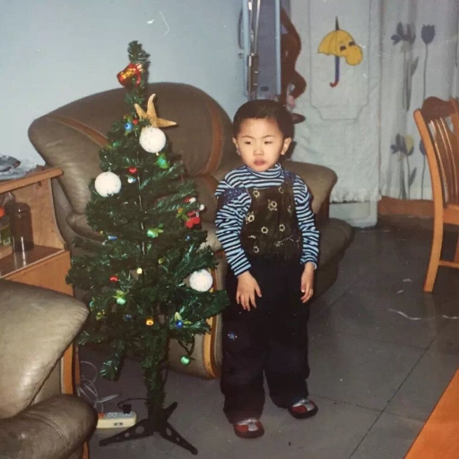

|
Zhengxiao Han I am an MSR student at Northwestern Univeristy. I received my Bachelor's degree in 2023 at Beijing University of Chemical Technology. I spent one year as a Research Assistant at PKU-Agibot (智元机器人) Lab, Peking University, advised by Prof. Hao Dong. I spent two years as a Research Intern at DISCOVER Lab, Tsinghua University, advised by Xinliang Zhang, Prof. Hao Zhao and Prof. Guyue Zhou. During this time, I collaborated closely with ARX (方舟无限) and DISCOVER Robotics (求之科技) during their formative stages, prior to their official founding. Proudly, I am a founding contributor to Mini Pupper, an open-source quadruped robot. LinkedIn / GitHub / X / Google Scholar / Email |
 |
🔥 News
|
{kind=link}
{kind=link}
📚 Publications* : Equal contribution; †: Corresponding author(s) |
|
|
Foundation Feature-Driven Online End-Effector Pose Estimation: A Marker-Free and Learning-Free Approach
Tianshu Wu*, Jiyao Zhang*, Sheldon Liang*, Zhengxiao Han, Hao Dong† ICRA, 2025 [Paper] [Website] |

|
Enhancing Daily Life Through an Interactive Desktop Robotics System
Yuhang Zheng, Qiyao Wang, Chengliang Zhong†, He Liang, Zhengxiao Han, Yupeng Zheng CICAI, 2023 🏆 Best Demo Award [Paper] [Video] We developed an intelligent desktop operating robot designed to assist humans in their daily lives by comprehending natural language with large language models (LLM) and performing a variety of desktop-related tasks. |
|
|
Long-term Interactive Driving Simulation: MPC to the Rescue
Zhengxiao Han, Zhijie Yan, Yang Li, Pengfei Li, Yifeng Shi, Nairui Luo, Xu Gao, Yongliang Shi, Pengfei Huang, Jiangtao Gong, Guyue Zhou, Yilun Chen, Hang Zhao, Hao Zhao† CICAI, 2023 [Paper] [Code] [Video] Cooperated with Baidu Apollo and MARS Lab at Tsinghua University. We propose to introduce a tailored Model Predictive Control (MPC) module as a rescue into the state-of-the art interactive trajectory prediction model M2I. Notably, our method can effectively address the Out-of-Domain (OOD) problem in long-term simulation by enforcing a flexible regularization that admits the replayed data, while still enjoying the diversity of data-driven predictions. |
|
|
INT2: Interactive Trajectory Prediction at Intersections
Zhijie Yan, Pengfei Li, Zheng Fu, Shaocong Xu, Yongliang Shi, Xiaoxue Chen, Yuhang Zheng, Yang Li, Tianyu Liu, Chuxuan Li, Nairui Luo, Xu Gao, Yilun Chen, Zuoxu Wang, Yifeng Shi, Pengfei Huang, Zhengxiao Han, Jirui Yuan, Jiangtao Gong, Guyue Zhou, Hang Zhao, Hao Zhao† ICCV, 2023 [Paper] [Code] [Video] We present a large-scale interactive trajectory prediction dataset named INT2 for INTeractive trajectory prediction at INTersections. INT2 includes 612,000 scenes, each lasting 1 minute, containing up to 10,200 hours of data. We benchmark the best open-sourced interactive trajectory prediction method on INT2 and Waymo Open Dataset, under in-domain and cross-domain settings. |
|
|
Build and simulate a Mini Pupper robot in the cloud without managing any infrastructure
Bingjiao Yu, Afreez Gan, Matt Hansen, Xiaoyang Zhu, Zhengxiao Han AWS Robotics Blog, 2022 [Blog] In this blog, we highlight how AWS RoboMaker simplifies robotics simulation. Using the Mini Pupper robot, we demonstrate how developers can build and test ROS-based navigation applications in a managed cloud environment. AWS Cloud9 streamlines development, while AWS RoboMaker enables scalable, parallel testing. This cloud-based solution makes robotics development more accessible, accelerating workflows and reducing infrastructure management. |
🦾 ProjectsI have always been working on Robotics. |
|
|
ICRA 2025 What Bimanuals Can Do (WBCD) Challenge
Weize Li, Zhengxiao Han, Lixin Xu, Xiangyu Chen, Harrison Bounds, Chenrui Zhang, Yifan Xu, ICRA, 2025 🏆 The First Place [Website] The ICRA 2025 WBCD Challenge is a hackathon organized by Google DeepMind, the Robotics and AI Institute (RAI), and other leading partners. This competition benchmarks real-world bimanual tasks across three tracks—packing logistics, scientific experiments, and table operations—pushing robotics from lab demos to billion-dollar market potential. In the Table Operations track, we tackled a series of demanding tasks under strict requirements for speed, precision, and reliability: unfolding a tablecloth (deformable-object manipulation), placing a pizza onto the table (pick-and-place), and opening and closing a food storage box. |
|
|
Northwestern Humanoid
Zhengxiao Han ME499: Independent Project [Slides] [RL Code] [ROS 2 Code] I independently developed a medium-sized humanoid robot from scratch. On the mechanical design front, I introduced an offset angle to the pelvis and manufactured the hardware using 3D printing. For the locomotion algorithm, I created a set of reward functions and implemented PPO reinforcement learning using the rsl_rl library and Genesis simulator to enable walking. In summary, over this 10-week project, I built the robot's hardware, integrated its motors and sensors with ROS, and successfully simulated its walking using an RL policy. |

|
Tendon-Driven Dexterous Hand Basics: 2N Finger
Konrad Laudon, Eliana Storkamp, Zhengxiao Han, Charlie Seifert, Sairam Umakanth, Yifei Chen, Kevin Lynch Warm-up Project for ME472: Robot Design Studio [Code] [Documentation] This warm-up project for Robot Design Studio explores the concept of a dexterous 2N finger. Built with a 3D-printed structure, tendon-driven actuation, and ODrive Pro-controlled brushless motors, it uses custom CAN and serial protocols for smooth communication between the Teensy, ODrive, and laptop. We verified the kinematics by displaying joint states in the GUI and Rviz, integrated a ROS 2 interface for future expansion, and demonstrated PD control. One more thing, we over-toasted one ODrive Pro (1*$229), two Teensy 4.1 boards(2*$31.5), and four MCP2561 chips(4*$1.28)! |
|
|
Point Cloud Classification
Zhengxiao Han, Zhengyang (Kris) Weng, Ben Benyamin Final Project for MSAI349: Machine Learning [Code] We developed a PyTorch object classification model that processes point cloud data enriched with RGB information using a modified PointNet architecture. Our approach leverages a realistic dataset generated in Isaac Sim from OmniObject3d object models, capturing RGB-D images and segmentation labels for five classes (apple, banana, bottle, bowl, cup). With a four-layer MLP, max pooling, and transformation networks addressing order and pose variations, our model achieves 70% testing accuracy and outperforms traditional KNN methods. |

|
Doodle Droid (Reposted by Franka Robotics)
Yanni Kechriotis, David Matthews, Harrison Bounds, Zhengxiao Han, Christian Tongate, Matthew Elwin Final Project for ME495: Embedded Systems in Robotics [Code] [LinkedIn Post] A franka robot arm is used to draw portraits as line art. Users can take a photo of themselves or others which the robot will convert to pen strokes and draw them on a paper detected and localized using april tags. My primary role is to develop the MoveIt 2 API library. My secondary role is to integrate the code. |
|
|
Northwestern University MSR Hackathon
Zhengxiao Han, Matthew Elwin My MSR journey at Northwestern University kicked off with an intense two-week hackathon. We firstly reviewed BFS, DFS and RRT path planning algorithms. The most complex challenge was designing a robotic grasping system. I used HSV filtering to create a mask for detecting a purple pen, and by leveraging the camera's intrinsic matrix and aligned depth image, I calculated the pen's 3D position. To handle camera movements, I used an ArUco tag to dynamically calculate the transformation between the camera and robotic arm, making my system robust to any accidental camera shifts. At last I can generate a 6D grasping pose for the robotic arm. |
|
|
Synthetic Grasping Dataset Generation
Zhengxiao Han, Jiyao Zhang, Hao Dong I generated a synthetic dataset by Utilizing Isaac Sim and OmniObject3d. By extracting the model's pointcloud, I used RANSAC to fit the planes, then calculate the normal vectors, and finally used convex hulls to find areas that can place other objects. With this pipeline, I generated more than 300,000 data samples including RGB, Depth, and Segmentation information for training a grasping policy. The whole data generation process was done by me independently. |

|
7-DOF Humanoid Robotic Arm with Tactile-enabled Dexterous Hand
Zhengxiao Han, Jinzhou Li, Tao Wang, Hao Dong Constructed a 7-DOF humanoid robotic arm with dexterous hands equipped with tactile sensors for data collection, and interfaced it with ROS Control and MoveIt. All work was done by me independently. We will work on encoding visual, tactile (not vision-based) and joint signals for imitation learning and deploy learned policies on real robots. |

|
Vision-based Tactile Sensor
Zhengxiao Han, Jiyao Zhang, Hao Dong Developed a binocular version of 9DTact, a vision-based tactile sensor for robotic grasping. I independently designed all mechanical and electrical components—including the 3D-printed housing and custom PCB. Although the design showed promise, camera lens issues eventually rendered this version obsolete. |

|
Full-stack 6-DOF robotic arm development
Zhengxiao Han, Jiyao Zhang, Hao Dong Achived hardware design of a new 6-DOF robotic arm, and interfaced all hardware under ROS Control and MoveIt. Interfaced the robotic arm with GSNet and achived a grasping demo. All work was done by me independently. |

|
Full-stack 6-DOF robotic arm and gripper development
Zhengxiao Han, Jiyao Zhang, Hao Dong Achived hardware design of a 6-DOF robotic arm and a 2-finger adaptive parallel gripper (same capability as Robotiq 2f-85 Gripper). Constructed a robotic arm SDK with CMake, and interfaced the lib with ROS and Isaac Sim. |

|
Bimanual Demonstration System
Zhengxiao Han, Shanning Zhuang, Zihang Chen, Zihan Zhuang, Ximing Wang, Jiangtao Gong Inspired by ALOHA, we proposed an improved bimanual demonstration system. Constructed the SDK using C++ and CMake. Utilized KDL to solve kinematic and dynamic problems, then achived gravity compensation based on inverse dynamics. Designed a parallel two-finger gripper based on rack-gear structures. |

|
Mini Pupper 2: Open-Source Quadruped Robot Dog Kit
Afreez Gan, Lily Wang, Jian Song, Marcin Prylinski, Zhengxiao Han, Yunlong Feng Developed all the ROS 2 (Humble) software suite including Locomotion, SLAM, Navigation, and CV functions. Deployed Cartographer with an Extended Kalman Filter (EKF) to fuse IMU data and LiDAR odometry, enhancing the robostness and accuracy of Mini Pupper's localization system. |

|
Cooperative Multi-Robot System
Zhengxiao Han, Jingtian Deng, Chenghao Lin, Xiangyu Chen, Tianao Ren, Guyue Zhou Utilized Pure Pursuit algorithm for multi-robot formation control, which was tested in both real world and Isaac Sim. Utilized an EKF-based 2D LiDAR localization system as the odometry. Utilized KDL for solving kinematic problems of our own 6-DOF robotic arm, and combined it with the odometry, achieving Chiken-Head Mode. Combined all the functions above, and constructed a multi-robot cooperative system to carry a box in Isaac Sim. |

|
ICRA 2022 RoboMaster University Sim2real Challenge
Zhengxiao Han, Chenghao Lin, Tianao Ren, Luoji Zhu, Haitao Rao Deployed an Extended Kalman Filter (EKF) alongside an omnidirectional motion model for state estimation using sensor data, including IMU and odometry. Utilized A* algorithm for global path planning and Timed Elastic Band (TEB) algorithm for local path planning. Utilized ArUco library for detecting boxes' poses. |

|
Mini Pupper: Open-Source Quadruped Robot Dog Kit
Afreez Gan, Marcin Prylinski, Xiongshi Xu, Zhengxiao Han Inspired by Stanford's open-source quadruped robot Pupper, I designed my own mechanical hardware, mainly improved its leg structures. After that, I was contacted by Mini Pupper's team and joined them. We developed the first product together. I independently developed all the ROS software suite including Locomotion, SLAM, Navigation, and CV functions. We crowd-funded $500,000 on Kickstarter when I was a junior. |
|
Design and source code from Jon Barron's website. |